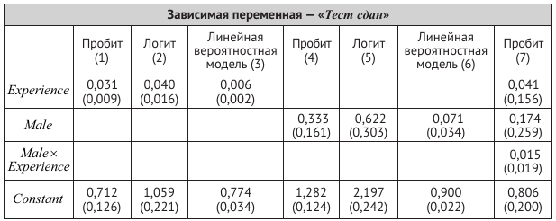
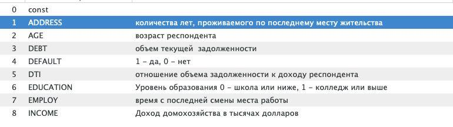

(Необходимо изучить материал раздела 11.3 и использовать дифференциальное исчисление.)
Предположим, что случайная величина \(Y\) имеет распределение \(\Pr(Y = 1) = p\), \(\Pr(Y = 2) = q\) и \(\Pr(Y = 3) = 1 − p − q\). Случайная выборка размера \(n\) формируется из генеральной совокупности с вышеуказанным распределением, случайные величины обозначаются как \(Y_1, Y_2, \dots, Y_n\).
а. Запишите функцию правдоподобия для параметров \(p\) и \(q\).
б. Постройте формулы оценок максимального правдоподобия (ОМП) для параметров \(p\) и \(q\).
Упражнения 11.1–11.5 основываются на следующих предположениях. Случайным образом были опрошены четыреста претендентов на получение водительского удостоверения. Каждому из них был задан вопрос о том, сдали ли они свой экзамен на получение водительского удостоверения (\(Pass_i = 1\)) или провалили (\(Pass_i = 0\)). Также дополнительно были собраны данные о половой принадлежности респондентов (\(Male_i = 1\), если респондент является мужчиной, и \(Male_i = 0\), если респондент является женщиной) и их водительском опыте (\(Experience_i\) — водительский стаж в годах). В приведенной ниже таблице представлены результаты оценок нескольких моделей.

Используя результаты из столбца (1), ответьте на вопросы:
а) Зависит ли вероятность успешной сдачи теста от \(Experience\)? Поясните свой ответ.
б) Водительский стаж Мэтью составляет 10 лет. Какова вероятность того, что он успешно сдаст тест?
в) Кристофер — начинающий водитель (не имеет опыта вождения). Какова вероятность того, что он сдаст тест?
г) Выборка содержала значения \(Experience\) в интервале от 0 до 40 лет, но только четыре человека в выборке имели стаж вождения более 30 лет. Джеду 95 лет, он водит автомобиль с тех пор, как ему исполнилось 15 лет. Какова, согласно модели, вероятность того, что Джед успешно сдаст тест? Считаете ли Вы, что это значение является надежным? Поясните свой ответ.
Используя таблицу, представленную выше, ответьте на следующие вопросы:
а) Ответьте на пункты (а) — (в) упражнения 11.1, используя результаты, представленные в столбце (2);
б) Выпишите предсказанные вероятности на основе пробит- и логит-моделей из столбцов (1) и (2) для значений Experience в интервале от 0 до 60 лет. Похожи ли результаты, полученные на основе оценок пробит- и логит-моделей?
а) Ответьте на пункты (а) — (с) из упражнения 11.1, используя результаты столбца (3).
б) Выпишите предсказанные вероятности на основе пробит- и логит-моделей из столбцов (1) и (3) как функции от \(Experience\) для значений \(Experience\) в интервале от 0 до 60 лет. Как вы считаете, можно ли использовать в данном случае линейную вероятностную модель? Поясните свой ответ.
Используя результаты столбцов (4) — (6):
а) Вычислите оценки вероятностей успешной сдачи теста для мужчины и для женщины.
б) Различаются ли модели в столбцах (4) — (6)? Поясните свой ответ.
Используя результаты столбца (7):
а) Акира — мужчина с 10-летним стажем вождения. Какова вероятность того, что он успешно сдаст тест?
б) Джейн — женщина с двухлетним стажем вождения. Какова вероятность того, что она успешно сдаст тест?
в) Зависит ли влияние водительского стажа на прохождение теста от пола испытуемого? Проясните свой ответ.
Файл default.csv содержит финансовую и демографическую информацию о 850 бывших и потенциальных клиентах. Первые 700 наблюдений — это клиенты, которые ранее получали кредиты. Последние 150 наблюдений представляют собой потенциальных клиентов, которых банку нужно классифицировать как хорошие или плохие риски кредитования.

Оцените logit-модель и probit-модель вероятности дефолта. Рассмотрите различные спецификации моделей.
Рассчитайте предельный эффект от изменения отношения объема задолженности к доходу респондента (DTI) на вероятность дефолта.
Проверьте гипотезу о совместной значимости переменных ADDRESS и EMPLOY.
Рассчитайте предсказанные вероятности для клиентов банка. Предскажите дефолты. Оцените предсказательную силу модели, используя показатели чувствительности и специфичности. Постройте ROC-кривую. Проинтерпретируйте результаты.